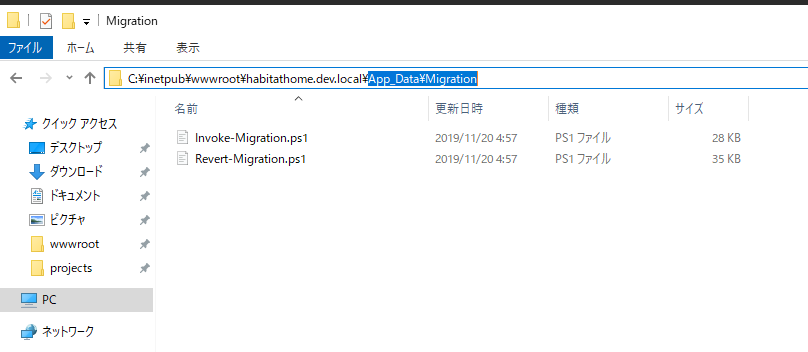

4.1. Sitecore blob storage の設定¶
Sitecore 9.3 からは Azure のストレージサービスとなる Azure Blob Storage の利用ができるようになりました。この設定を編集サーバー、配信サーバーに対して設定することで、ストレージを共有することができるようになります。ここでは実際に使うための手順を紹介します。
4.1.1. 事前の準備¶
4.1.1.1. データベースのクリーンアップ¶
モジュールのセットアップの前に、一度 SQL データベースのクリーンアップを実行します。下記の画面は コントロールパネル - 管理ツール を開きます。
{kind=link}
続いて Database and Operations を選択すると Database Cleanup を開きます。
{kind=link}
この画面で、左側の Databases からは master と web を選択、右側のタスクから Cleanup blobs をチェックして実行してください。
{kind=link}
4.1.1.2. Azure Blob ストレージの準備¶
Sitecore と接続するための Azure Storage を準備します。リソースの追加から ストレージ グループにある ストレージアカウント を選択します。：
{kind=link}
ここではストレージアカウント名をとデータセンターを設定して作成を実行します。
{kind=link}
しばらくすると作成をしたリソースグループに、リソースアカウントが表示されます。作成したリソースアカウントを開き、アクセスキーを選択しあｍす。
{kind=link}
ここにあるアクセスキーは後ほど利用する形となります。
4.1.2. モジュールの展開¶
モジュールの展開方法はいくつか用意されています。今回は仮想マシンに構築しているデモ環境を利用するため、Webdeploy を利用せずに手作業で設定していきます。Sitecore のインストールページから、Blob storage のパッケージをダウンロードします。
ダウンロードした zip ファイルを展開します。
{kind=link}
展開したフォルダにアクセスして、 ContentWebSite を開くことで3つのフォルダが展開されていることがわかります。
{kind=link}
展開されたファイルを実際の Sitecore の Web サイトにコピーをしていきます。まず、 App_Config - Modules の下に Sitecore.AzureBlobStorage のフォルダをコピーします。
{kind=link}
続いて App_Data のフォルダに Migration と Transforms のフォルダをコピーします。
{kind=link}
最後に bin にある 5 つのファイルをコピーします。
{kind=link}
ここから接続の設定になります。まず、App_configConnection.Strings.config に以下の1行を追加してください。：
<add name="azureblob" connectionString="<AzureStorageConnectionString>"/>
ここで設定する AzureStorageConnectionString は既に作成をしている Azure Storage の接続文字列となります。
続いてストレージ名を記載します。この設定は App_ConfigModulesSitecore.AzureBlobStorageSitecore.AzureBlobStorage.config が設定ファイルになります。ファイルを開くと以下の記載があります。
<param name="containerName">blobcontainer</param>
containerName がコンテナの名前となります。今回はデフォルトの名前 blobcontainer で作成します。
Azure の管理画面に戻り、ストレージアカウントを開きます。コンテナーの項目をクリックします。：
{kind=link}
コンテナーを作成します。
{kind=link}
設定はこれで完了となります。
4.1.3. Blob データの移行¶
ここで紹介している手順は Use the blob migration tool で紹介している手順となります。
すでにメディアライブラリで管理しているファイルを Azure Blob Storage に移行していきます。このための PowerShell のスクリプトが、App_DataMigration に用意されています。
{kind=link}
PowerShell で処理できるように、AzureRM をインストールします。まず、既に入っているかどうかを確認します。入っていなければ、Install-Module コマンドでインストールをします。途中 PSGallery を利用するか？という質問が出てきますので Y を入力して Enter を入れれば AzureRM がインストールされます。
Get-Module -Name AzureRm -ListAvailable
Install-Module -Name AzureRM
インストールが終わったあと、モジュールのインストールを確認します。
Get-Module -Name AzureRm -ListAvailable
{kind=link}
これで準備が完了しました。実際に PowerShell のスクリプトのあるフォルダに移動して、以下の1行を実行してください。
.\Invoke-Migration.ps1 -SqlDBConnectionNames @("master", "web") -AzureBlobConnectionName "azureblob" -BlobContainerName "blobcontainer" -Force *>&1 | Tee-Object -FilePath Invoke-Migration.log
{kind=link}
処理が進むと、Azure Storage のコンテナにファイルがコピーされていることがわかります。
{kind=link}
これにより Sitecore のメディアファイルを Azure のストレージに展開することができました。
4.1.4. 参考動画¶
ここまでの手順を動画としてまとめました。